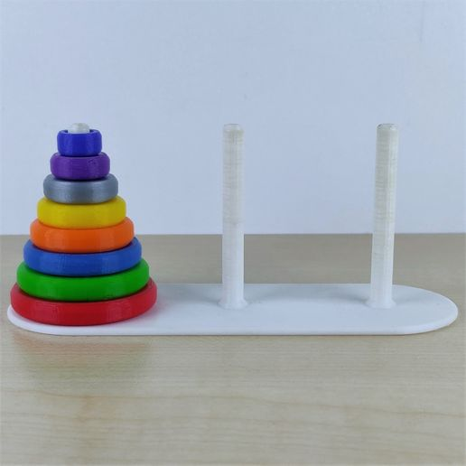

Récursivité
Dans cette activité, nous allons découvrir le principe de la récursivité.
Retour sur un exercice précédent
Cette fonction est constuite sur la logique suivante : demander un identifiant tant que l'identifiant donné par l'utilisateur est vide.
On peut adopter une autre logique : demander un identifiant à l'utilisateur puis, s'il est vide, demander à nouveau un identifiant à l'utilisateur.
def demander_identifiant() :
identifiant = input("Quel est votre identifiant ? ")
if identifiant != "" :
return ...
else :
print("Erreur de saisie.")
return ...
Définition
Une fonction est récursive si elle se définit à partir d'elle-même. Par exemple, une fonction qui comporte, dans son corps, au moins un appel à elle-même est une fonction récursive.
Les fonctions basées sur une simple boucle while peuvent très facilement être traduite en fonction récursive. Exemple :
def nombre_bits(n) :
""" Retourne le nombre de bits nécessaire pour coder un entier naturel en binaire.
n : le nombre entier naturel écrit en base 10.
"""
assert n >= 0, 'Cette fonction attend un entier positif ou nul'
compteur = 1
while n > 1 :
n = n // 2
compteur = compteur + 1
return compteur
def nombre_bits(n) :
""" Retourne le nombre de bits nécessaire pour coder un entier naturel en binaire.
n : le nombre entier naturel écrit en base 10.
"""
assert n >= 0, 'Cette fonction attend un entier positif ou nul'
if n > 1 :
return 1 + nombre_bits(n//2)
else :
return 1
Tout comme lorsque l'on écrit des boucles while, il faut être très vigilent sur la condition d'arrêt d'une fonction récursive. Lorsque ces conditions sont mal écrites, le message d'erreur 'maximum recursion depth exceeded' apparaît.

Exemple :
enumeration(["pêche", "pomme", "poire", "abricot"])
donne :
"pêche, pomme, poire et abricot."
La fonction sera alors testée avec les chaînes de caractères :
- EMMA
- ANNA
- canoë
- kayak
- azfghza
- engage le jeu que je le gagne
Modifier cette fonction pour qu'elle ignore les espaces.
Cette fonction peut faire appel à la fonction premier_indice suivante :
def premier_indice(liste, valeur, offset=0) :
""" Si `valeur` est dans la liste `liste`, retourne le premier indice où l'on trouve cette valeur. Sinon, retourne -1
liste : la liste où l'on cherche une valeur.
valeur : la valeur que l'on cherche dans la liste.
offset : le nombre de valeurs déjà écartées par récurrence.
"""
if len(liste) == 0 :
return -1
elif liste[0] == valeur :
return offset
else :
return premier_indice(liste[1:], valeur, offset+1)
Pile des appels récursifs
Le premier appel de la fonction récursifs doit attendre le résultat des autres appels récursifs. Pour cela, les appels sont stockés dans une « pile d'exécution ». Les piles sont des structures algorithmiques qui seront étudiés en détails plus tard dans l'année.
Dans la pratique, ces piles ne sont pas de tailles infinies. L'écriture d'une fonction récursive sans prendre de précaution peut mener à remplir cette pile est entraîne un dépassement de mémoire. C'est la raison du message 'maximum recursion depth exceeded'.
Voici une illustration de la pile d'appels récursifs lorsque l'on utilise la fonction récursive maximum de l'exercice 4 (plus grand élément d'une liste) sur la liste [10, 8, 4, 9, 7]
maximum([7])
maximum([9, 7])
maximum([4, 9, 7])
maximum([8, 4, 9, 7])
maximum([10, 8, 4, 9, 7])
Applications
Recherche dichotomique
La recherche dichotomique est un algorithme de recherche d'une valeur dans une liste triée vu en première.
Nous allons voir ici une programmation récursive de la recherche dichotomique.
Le principe de la recherche dichotomique consiste à comparer la valeur recherchée avec la valeur centrale de la liste afin d'éliminer la moitié des valeurs où ne peut pas se trouver la valeur recherchée.
- Dans une liste de n éléments, quel est l'indice de l'élément central ?
- Si la valeur recherchée est plus grande que la valeur centrale, quelle partie de la liste faut-il éliminer ?
- Quelle est la condition d'arrêt de la récursivité ?
- Ecrire la pile d'exécution lors de l'appel de :
recherche_dichotomique([12, 13, 15, 17, 21, 22, 22], 15) - Ecrire la pile d'exécution lors de l'appel de :
recherche_dichotomique([0, 1, 1, 2, 3, 5, 8, 13, 21], 7) - Programmer la recherche dichotomique de manière récursive.
Rendu du monnaie
En classe de première, nous avons vu un algorithme de rendu de monnaie. Cet algorithme était dit glouton car il était basé sur des choix qui paraissaient optimaux à chaque étape, mais ne garantissait pas que le résultat global était optimal. Une solution pour trouver le rendu optimal serai de déterminer toutes les solutions de rendu de monnaie possible.
Nous allons écrire un algorithme récursif qui permet de dresser cette liste.
On suppose que le montant à rendre et un nombre entier, tout comme le montant des pièces et des billets.
On suppose également que l'on dispose de toutes les pièces et billets en quantité illimitée.
La liste des pièces et billets disponibles est : [500, 200, 100, 50, 20, 10, 5, 2, 1]
Par la suite, on parlera uniquement de pièces pour simplifier les explications.
Le principe est le suivant :
-
si le montant est supérieur ou égal à la valeur de la première pièce, alors deux choix s'offrent à moi :
- j'utilise cette pièce et je cherche à rendre une montant plus petit avec les mêmes pièces disponibles.
- je n'utilise pas cette pièce et je cherche à rendre le même montant avec les autres pièces disponibles.
- si le montant est inférieur à la valeur de la première pièce, alors je cherche à rendre le même montant avec les autres pièces disponibles.
- Quelles sont les conditions d'arrêts ?
- Parmi les conditions d'arrêts, laquelle aboutit à un rendu de monnaie possible ?
- Ecrire la pile d'exécution pour rendre 6 euros avec la liste de pièces et de billets disponibles ci-dessus.
- Programmer de manière récursive le programme affichant les rendus de monnaie possible.
Suite de Fibonacci
La suite de Fibonacci est définie par :
- u0 = 1
- u1 = 1
- un+2 = un+1 + un, pour tout entier naturel n
- Programmer de manière récursive la fonction fibo(n) donnant la valeur de un
- Ecrire la pile d'exécution lors de l'appel de fibo(4)
La récursivité sur la suite de Fibonacci pose vite des problèmes ! Le nombre d'appels récursifs devient vite impressionnant ! Cependant cette fonction peut être optimisée car beaucoup de ces appels sont identiques. Ces résultats pourraient être stockés lors du premier calcul pour être réutilisé lors de autres appels. Cela s'appelle la mémoïsation et cette nouvelle approche s'appelle programmation dynamique.
def fibo(n, M={}) :
"""M est un dictionnaire servant à la mémoïsation"""
if n in M :
return M[n]
if n == 0 :
return 1
if n == 1 :
return 1
valeur = fibo(n-1, M) + fibo(n-2, M)
M[n] = valeur
return valeur
Tour de Hanoï
Les Tours de Hanoï sont un jeu de réflexion ou le but est de déplacer une tour formée de disque d'un pilier vers un autre en utilisant un troisième pilier intermédiaire. A tout moment, il est impossible de déposer un disque sur un disque de rayon plus petit. 
- Avec combien de disque ce problème est-il évident ?
- Expliquer comment résoudre le problème à 3 disques en utilisant la résolution du problème à 2 disques et du problème à 1 disque.
- Expliquer comment résoudre le problème à 4 disques en utilisant la résolution du problème à 3 disques et du problème à 1 disque.
-
Ecrire une fonction hanoi(depart, arrive, intermediaire) affichant toutes les étapes pour résoudre le déplacement de la tour depart vers la tour arrive en utilisant la tour intermediaire.
Les tours sont des listes dont la première valeur est le nom du pilier puis les autres sont les entiers représentants les rayons des disques placées dans cette tour.
Pour résoudre le problème de la tour de Hanoï à 8 disques, nous appellerons hanoi(["A", 8, 7, 6, 5, 4, 3, 2, 1], ["C"], ["B"])
Vous pourrez utiliser la fonction affichage_hanoi.py pour afficher les étapes intermédiaires.
def affichage_hanoi(tour1, tour2, tour3) :
tours = sorted([tour1, tour2, tour3])
rayon_max = max(tour1[1:] + tour2[1:] + tour3[1:])
hauteur = len(tour1) + len(tour2) + len(tour3)
longueur = 6*rayon_max + 9
centres = [rayon_max+1, 3*rayon_max+4, 5*rayon_max+7]
G = [[" " for j in range(longueur)] for i in range(hauteur)]
for j in range(longueur) :
G[0][j] = "▇"
for t in range(3) :
for i in range(hauteur) :
G[i][centres[t]] = "│"
G[0][centres[t]] = "▇"
for i in range(1, len(tours[t])) :
for k in range(tours[t][i]+1) :
G[i][centres[t]-k] = "▇"
G[i][centres[t]+k] = "▇"
print("")
for i in range(hauteur-1, -1, -1) :
print(''.join(G[i]))